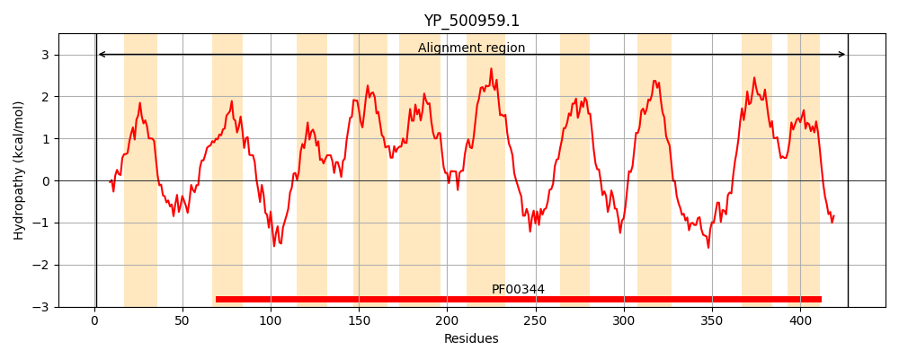
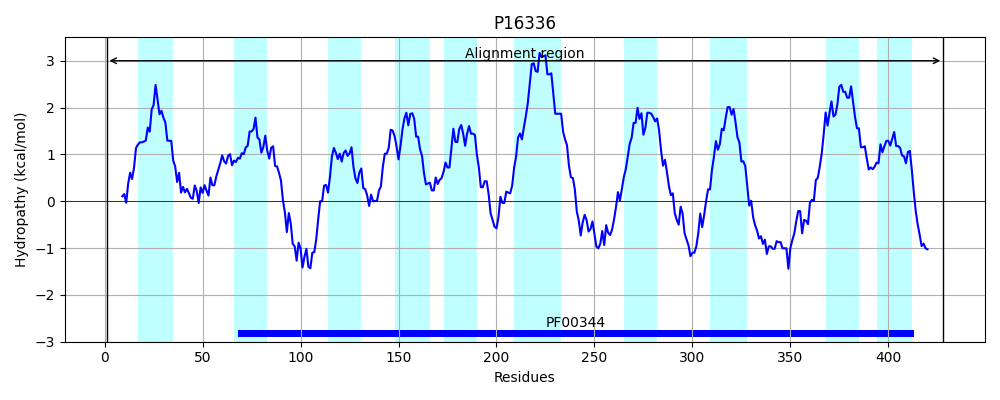
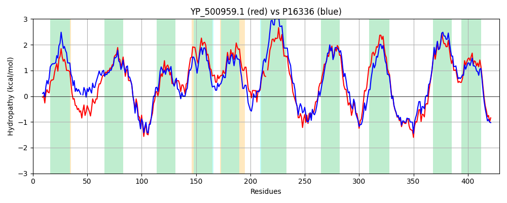

Hit Accession: P16336
Hit TCID: 3.A.5.2.1
Hit Description: gnl|BL_ORD_ID|9213 gnl|TC-DB|P16336|3.A.5.2.1 PREPROTEIN TRANSLOCASE SECY SUBUNIT - Bacillus subtilis.
Mach Len: 429
e:0.000000
Query TMS Count : 10
Hit TMS Count: 10
TMS-Overlap Score: 9.200000
Predicted Substrates:CHEBI:8526;protein polypeptide chain
BLAST Alignment:
Score: 1301 , Bit scores: 505 bits, E-value: 7.2e-179, Alignment length: 429, Percentage identity: 60
Query: 1 MIQTLVNFFRTKEVRNKIFFTLAMLVIFKIGTYIPAPGVNPAAFDNPQGSQGATELLNTFGGGALKRFSIFAMGIVPYITASIVMQLLQMDIVPKFSEWAKQGEVGRRKLNNVTRYLAISLAFIQSIGMAFQFNNYLKGALIINQSIMSYLLIALVLTAGTAFLIWLGDQITQFGVGNGISIIIFAGILSTLPASLIQFGQTAFVGQEDTSLAWL-KVLGLLVSLILLTVGAIYVLEAVRKIPIQYAKKQTAQRLGS-QATYLPLKVNSAGVIPVIFAMAFFLLPRTLTLFYPDKEWAQNIANAANPSSNVGMVVYIVLIILFTYFYAFVQVNPEKMADNLKKQGSYVPGIRPGEQTKKYITKVLYRLTFVGSIFLAVISILPILATKFMGLPQSIQIGGTSLLIVIGVAIETMKSLEAQVSQKEYKGF 427
M +T+ NF R ++RNKI FTL ML++F+IG +IP P VN A Q G +LLNTFGGGAL +FSIFAMGI PYITASI++QLLQMD+VPKF+EW+KQGEVGRRKL TRY I L FIQ++GM++ FNN G LI + +YL+IALVLT GTAFL+WLG+QIT GVGNGISIIIFAGI+S++P ++ Q +T FVG D + KV L+++++ + VG I++ +AVRKI IQYAK G Q+T+LPLKVN AGVIPVIFA+AF + PRT+ F+ + + I N + + VGM +Y+ LII FTYFYAFVQVNPE+MADNLKKQG Y+PG+RPG+ T+ IT +LYRLTFVGSIFLAVISILPI +F GLPQS QIGGTSLLIV+GVA+ETMK LE+Q+ ++ Y+GF
Sbjct: 1 MFKTISNFMRVSDIRNKIIFTLLMLIVFRIGAFIPVPYVNAEALQ-AQSQMGVFDLLNTFGGGALYQFSIFAMGITPYITASIIIQLLQMDVVPKFTEWSKQGEVGRRKLAQFTRYFTIVLGFIQALGMSYGFNNLANGMLIEKSGVSTYLIIALVLTGGTAFLMWLGEQITSHGVGNGISIIIFAGIVSSIPKTIGQIYETQFVGSNDQLFIHIVKVALLVIAILAVIVGVIFIQQAVRKIAIQYAKGTGRSPAGGGQSTHLPLKVNPAGVIPVIFAVAFLITPRTIASFFGTNDVTKWIQNNFDNTHPVGMAIYVALIIAFTYFYAFVQVNPEQMADNLKKQGGYIPGVRPGKMTQDRITSILYRLTFVGSIFLAVISILPIFFIQFAGLPQSAQIGGTSLLIVVGVALETMKQLESQLVKRNYRGF 428 | Protein Hydropathy Plots: |
|---|
|  |  |
Pairwise Alignment-Hydropathy Plot:
|
|---|
|  |